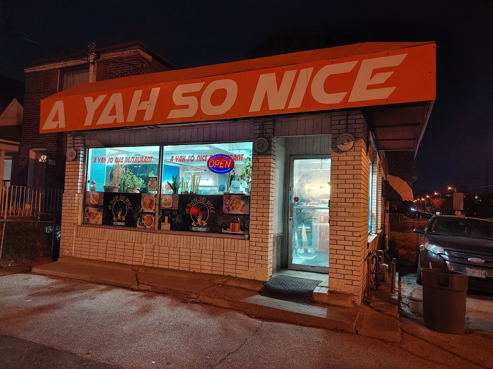

Caribbean restaurant · 1671 Keele Street, York
Jerk, BBQ and a welcome when you walk in.
A YAH SO NICE is a Caribbean restaurant at 1671 Keele Street in York. Reviewers come for jerk and BBQ chicken, oxtail and curry goat, and they talk about the people behind the counter. Call (647) 368-7590.
- Jerk chicken
- Half jerk / half BBQ
- Oxtail
- Curry goat
- Takeout
What’s on the trays
Jerk chicken, BBQ, or half and half
T. B went with “the large half jerk, half BBQ” and wrote that “the chicken was moist, tender and had perfect seasoning.” Ashley “was craving authentic jerk chicken flavour” and wrote, “They did not disappoint.” Bettina Ma, in a Google review copied by CanadaResto, wrote “BBQ chicken is 💯fire.”
Oxtail and curry goat
Siawash Ahmadi wrote, “The oxtail was tender and the bbq chicken was perfectly marinated.” Stefan, in a Google review copied by CanadaResto, called the goat curry “Delicious” and “ready fast for a quick pickup.” Massimo S, in a 3-star Google review, said the food “tastes great” but that the oxtail and curry goat were “mostly bone not enough meat.”
A counter you can walk up to
Ashley wrote, “From the moment I walked in I felt very welcomed and the people working there were so nice.” rana said “the two people working were incredible and so so so sweet,” then took the food home. Chantelle Ridley, in a Google review copied by CanadaResto, wrote that she lives hours away and “when I pass through Toronto I always stop.” Some directories list dine-in, delivery and catering; those options were not shown on the Google listing today, so they are not treated as confirmed here.
Dishes and service notes above come from Google reviews read on 2026-11-18, or from Google reviews copied by the CanadaResto directory, each labelled in the reviews section. No prices or menu are listed here. Call (647) 368-7590 if you have a question about today’s trays.
1671 Keele Street, York
Look for the orange awning on Keele Street
Monday to Saturday 10 a.m. to 9 p.m. · Sunday 11 a.m. to 7 p.m.
A YAH SO NICE is in a small storefront at 1671 Keele Street, with its name on an orange awning. Google lists it as a Caribbean restaurant, with a 4.8 rating from 228 reviews as of Nov 18, 2026. Reviewers describe walking in, talking with the people at the counter, and taking trays home. Some older listings still show Sunday as closed; the hours on this page are the ones on Google today.
“Wow, wow, wow, absolutely amazing. Went with the large half jerk, half BBQ. The chicken was moist, tender and had perfect seasoning.”
T. B, Google review, edited 6 months ago (as of Nov 18, 2026). Quoted as written.
What customers say
4.8 ★ from 228 Google reviews (checked Nov 18, 2026). Quotes are word for word. Each one says where it was read: on the Google listing itself, or on a public page that copies reviews. Google shows only a handful of reviews without signing in, so some quotes are Google reviews copied by the CanadaResto directory. A 3-star Google review and a 2-star CanadaResto copy are included, not only the 5-star ones.
★★★★★
Wow, wow, wow, absolutely amazing. Went with the large half jerk, half BBQ. The chicken was moist, tender and had perfect seasoning.
I also love the amount of coleslaw that you get. Right with your food not one of those little plastic container that you only get two bites from. You could tell the coleslaw was made fresh from the wonderful crunch you got from the veggies.
2nd update: I was so impressed with the food that I went back the very next day. I ended up getting the fried chicken, and again it's a must try.
Can't beat the amazing food portions for the price!
I will be back one more day during the week to try something else!
This shop is a must try, keep up the amazing job!
★★★★★
I came here yesterday for the very first time because I was craving authentic jerk chicken flavour.
They did not disappoint.
From the moment I walked in I felt very welcomed and the people working there were so nice. The portions are generous and a medium is enough for 2 people.
Prices are great as well.
They even threw in a piece of the fried bread they make for free since it was my first time, I don’t know what it’s called but it’s delicious. 😁I definitely recommend this gem to everyone and I’m glad I live a few steps away (you know I’m gonna try everything now lol) 😍
★★★★★
my partner wanted dinner so i googled jerk chicken and this place showed up. i went and the two people working were incredible and so so so sweet <3 when i got home my partner had already gotten food so me and sofie split it and it was life changing
★★★★★
Stumbled upon this gem while on the way home. Great food. The oxtail was tender and the bbq chicken was perfectly marinated. Uncle was nice enough to explain the cooking process and the recipes!
Definitely recommend.
★★★
Food tastes great but they put so much rice and very little goat and very little oxtail here is the meat for both the oxtail and curry goat mostly bone not enough meat it’s a shame
★★★★★
Excellent food and great service!!!
★★★★
Very good and authentic Jamaican Food
★★★★★
I live hours away but when I pass through Toronto I always stop. Amazing food, and people, such delicious food. The service is exceptional 👌
Star rating not shown in source
Delicious goat curry, it was not spicy. Was ready fast for a quick pickup. I was a little disappointed that they ran out of ground provisions and plantains.
★★★★★
BBQ chicken is 💯fire🔥🔥🔥😋😋😋🙌🙌🙌
★★★★★
Fantastic comfort food. Especially enjoyed the curry chicken !!
★★
Gave me the driest meatless chicken I’ve ever tasted, rice was cold
The awning, and the trays
Real photos from A YAH SO NICE’s public Google listing and its customers’ reviews. Tap to enlarge.
Visit A YAH SO NICE
1671 Keele St
York, ON M6M 3W6
Keele Street, York
| Monday | 10 a.m.–9 p.m. |
|---|---|
| Tuesday | 10 a.m.–9 p.m. |
| Wednesday | 10 a.m.–9 p.m. |
| Thursday | 10 a.m.–9 p.m. |
| Friday | 10 a.m.–9 p.m. |
| Saturday | 10 a.m.–9 p.m. |
| Sunday | 11 a.m.–7 p.m. |
These are the hours on Google today: 10 a.m. to 9 p.m. Monday to Saturday, and 11 a.m. to 7 p.m. on Sunday. CanadaResto lists the same hours. Older copies on exa.ai, Yelp and newlyopened.ca still list Sunday as closed. Please call (647) 368-7590 if you are coming on a Sunday, or near opening or closing time.